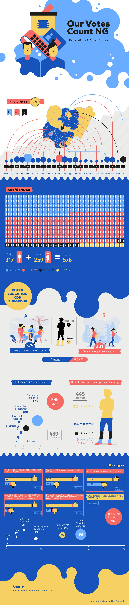

Visual Proof
The work, shipped


Translating complex electoral reform research into a nationally distributed publication for Yiaga Africa.
Yiaga Africa had a body of dense electoral reform research — legal analysis, governance findings, and policy recommendations aimed at fixing Nigeria's elections — but it lived in formats only specialists could read. They needed that research turned into a single, authoritative Setting the Agenda for Electoral Reform policy brief that a general national audience, journalists, and decision-makers could pick up, understand, and act on. The challenge was translation: keep the rigour, drop the friction, and package it as a publication credible enough to carry the Yiaga name nationally.
Convert specialist legal and governance language into a layout a non-expert citizen could scan, follow, and trust — without diluting the substance of the reform argument.
The brief had to look as authoritative as the institution behind it. A consistent grid, typographic hierarchy, and restrained palette to signal national-level seriousness.
One source file had to ship as both high-resolution print and lightweight digital — print-ready exports and screen-optimised PDFs from a single, controlled master.
Read through the full research, mapped the core arguments, and ranked what mattered most to a general reader.
Established a modular grid, type scale, and heading system so every page read in a predictable, scannable order.
Turned key data points and reform steps into visual callouts and infographics that carry meaning at a glance.
Prepared bleed, colour, and resolution for print, then exported a parallel screen-optimised digital edition.
Every spread was built on one modular grid so headings, body copy, and infographics aligned consistently — the foundation of the publication's credibility.
Bold display headings, clear sub-heads, and generous body spacing let readers navigate from headline to detail without getting lost in the density.
Yiaga's brand blue anchored the design, with a high-contrast accent used sparingly to flag the most important reform points and data.
Rather than burying findings in paragraphs, key statistics and reform steps were designed as infographics — making the case visible before it's even read.
The file was structured so a single source produced both a print-ready and a digital edition, keeping the brand identical across every channel it shipped on.
